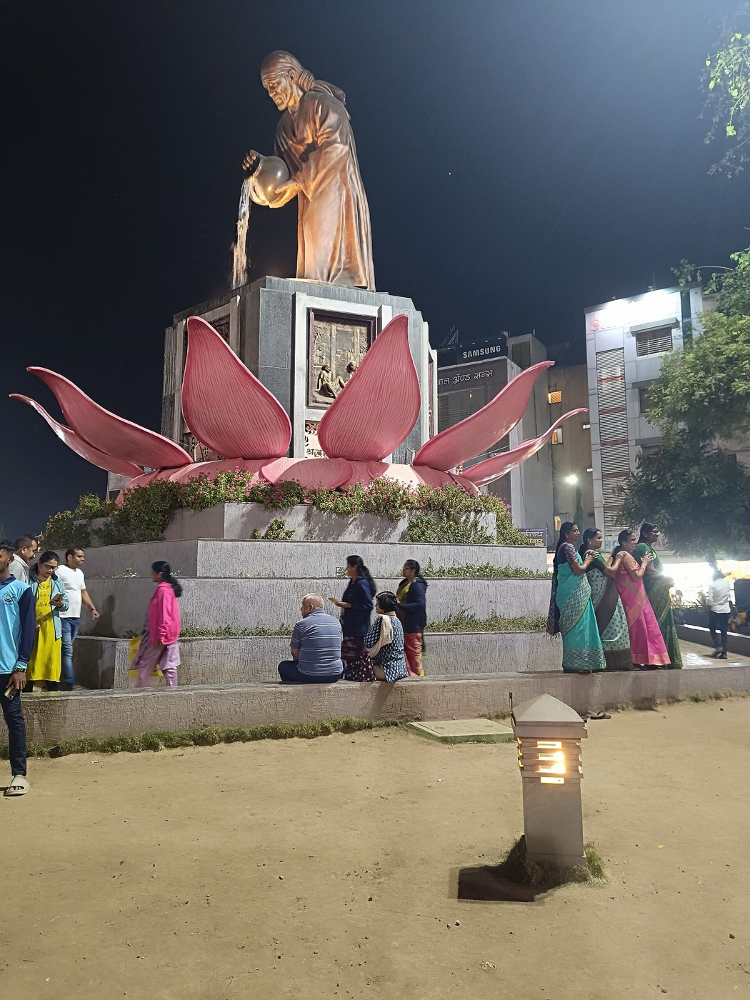
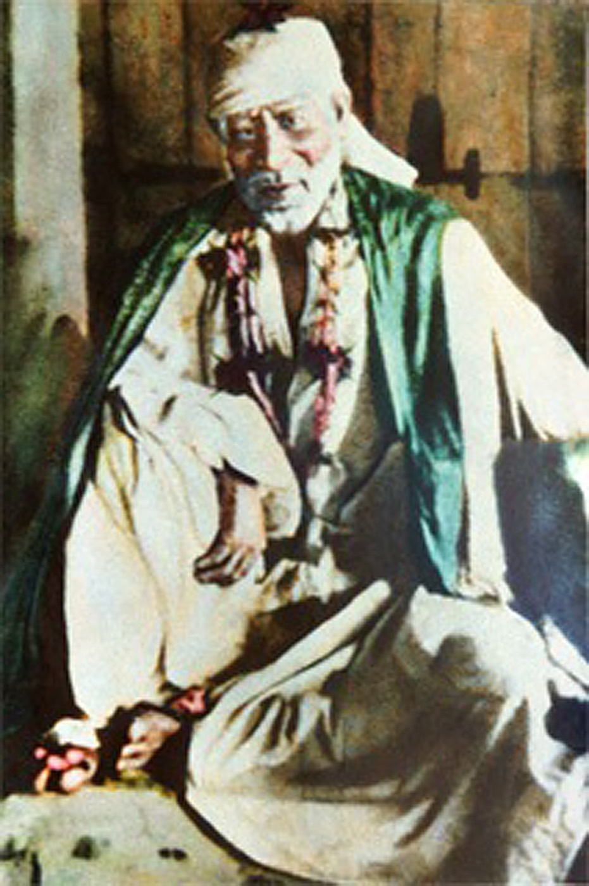
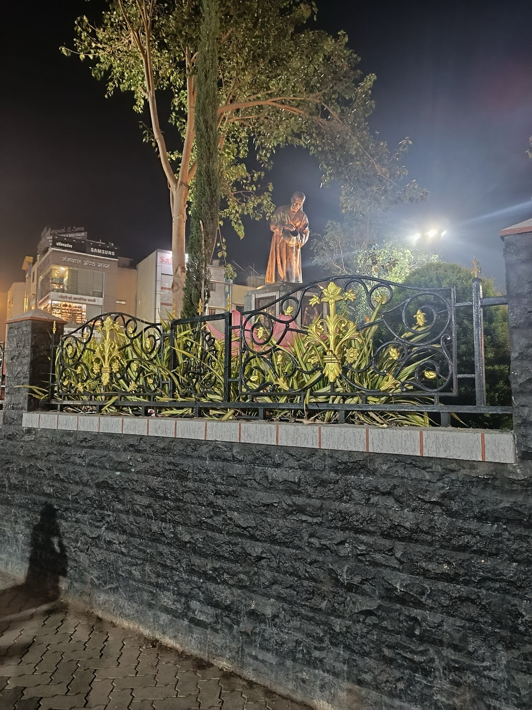
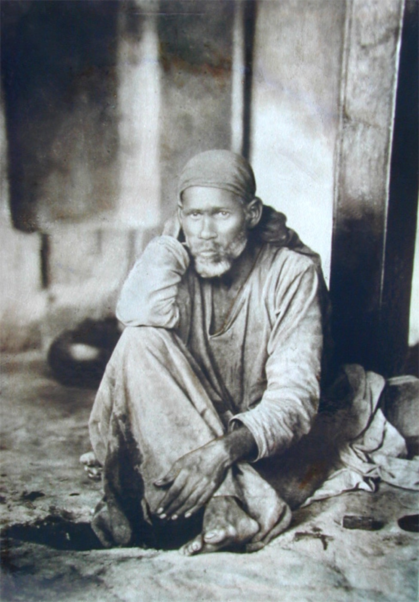
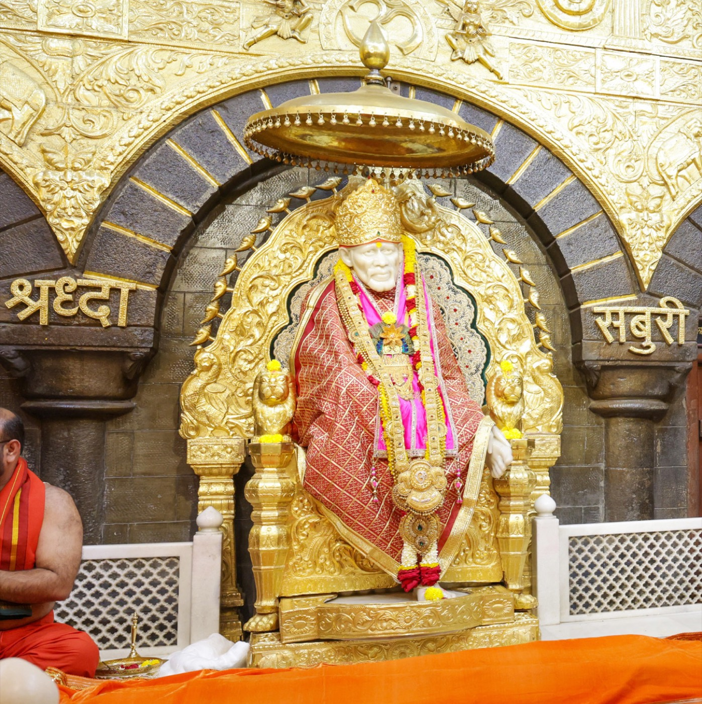
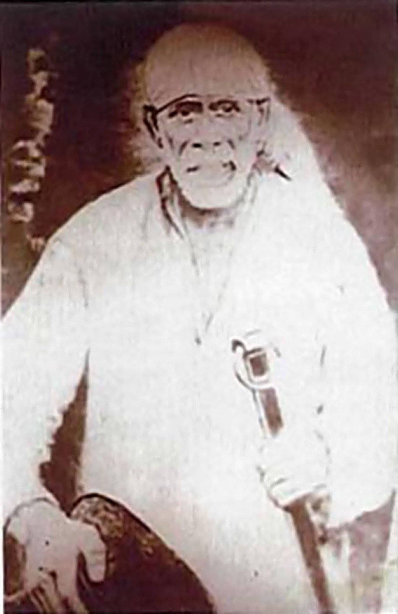
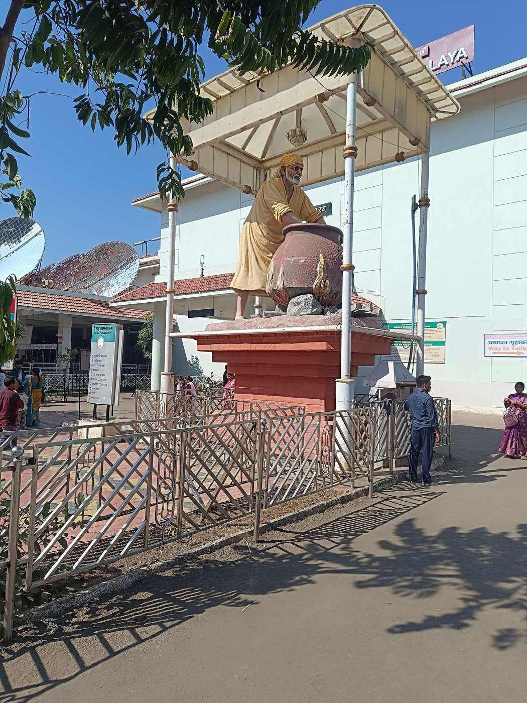

आषाढ़ पूर्णिमागुरु पूर्णिमा महोत्सव
गुरु के रूप में बाबा की विशेष पूजा, अखंड साईं नाम जप, भजन संध्या एवं महाप्रसाद।


पटना के अनीसाबाद क्षेत्र के धीराचक मोहल्ले में स्थित श्री साईं बाबा मंदिर श्रद्धा, शांति और सेवा का एक पावन केंद्र है। यहाँ प्रतिदिन बड़ी संख्या में भक्तजन बाबा के दर्शन कर अपने मन की शांति और जीवन की नई ऊर्जा प्राप्त करते हैं।
शिरडी के संत श्री साईं बाबा ने जीवन भर प्रेम, करुणा, दान और सर्वधर्म समभाव का संदेश दिया। उन्हीं के आदर्शों पर चलते हुए यह मंदिर नित्य आरती, भजन-सत्संग, अन्नदान (भंडारा) तथा समाज सेवा के कार्यों के माध्यम से बाबा की शिक्षाओं को जन-जन तक पहुँचाने का प्रयास करता है।
दैनिक आरतियाँ
दिन दर्शन
वार्षिक गुरुवार भंडारे
बाबा के अमर वचन
शिरडी परंपरा के अनुसार मंदिर में प्रतिदिन चार आरतियाँ होती हैं। कृपया आरती से 10 मिनट पूर्व पहुँचें।
प्रातः 5:15
भोर की प्रथम आरती, बाबा को जगाने की मंगल बेला।
दोपहर 12:00
भोग अर्पण के पश्चात मध्याह्न आरती एवं प्रसाद वितरण।
सूर्यास्त के समय
संध्या बेला में धूप-दीप के साथ भव्य आरती।
रात्रि 10:00
रात्रि विश्राम से पूर्व की अंतिम आरती।
| दिन | कार्यक्रम | समय |
|---|---|---|
| प्रतिदिन | मंदिर दर्शन | प्रातः 5:00 – रात्रि 10:30 |
| प्रतिदिन | साईं सत्संग एवं भजन | संध्या 7:00 – 8:00 |
| गुरुवार | विशेष अभिषेक, पालकी एवं भंडारा | प्रातः 7:00 एवं संध्या आरती के बाद |
| रविवार | साईं सच्चरित्र पाठ | प्रातः 9:00 – 11:00 |
| पूर्णिमा | सामूहिक हवन एवं विशेष पूजा | प्रातः 8:00 |
विशेष पर्वों पर समय में परिवर्तन संभव है। कृपया सूचना पट्ट देखें।


आषाढ़ पूर्णिमागुरु के रूप में बाबा की विशेष पूजा, अखंड साईं नाम जप, भजन संध्या एवं महाप्रसाद।
शिरडी परंपरा अनुसार रामनवमी पर पालकी यात्रा, झंडा पूजन एवं भव्य भंडारा।

विजयादशमीविजयादशमी के दिन बाबा की महासमाधि की स्मृति में विशेष अभिषेक एवं श्रद्धांजलि सभा।
बाबा ने जल से दीप जलाए थे – उसी स्मृति में मंदिर प्रांगण में हज़ारों दीपों का प्रज्वलन।

प्रत्येक गुरुवारबाबा के चित्र के साथ मंदिर परिसर में पालकी यात्रा, ढोल-मंजीरे एवं भजन कीर्तन।

1 जनवरीनए वर्ष का शुभारंभ बाबा के आशीर्वाद से – विशेष श्रृंगार, दर्शन एवं प्रसाद वितरण।
दूध, दही, शहद एवं गंगाजल से बाबा का अभिषेक – अपने परिवार के नाम से बुक करें।
जन्मदिन, वर्षगाँठ या पुण्यतिथि पर भंडारा कराकर पुण्य के भागी बनें।
गृह प्रवेश, नए कार्य का शुभारंभ आदि के लिए विधिवत हवन एवं पूजा।
बाबा के वस्त्र, पुष्प-माला एवं मुकुट से श्रृंगार हेतु सेवा अर्पित करें।
अपने परिवार अथवा मंडली के साथ बाबा के दरबार में भजन संध्या का आयोजन।
वस्त्र दान, ज़रूरतमंदों की सहायता एवं स्वास्थ्य शिविर जैसे सेवा कार्य।
मंदिर के दैनिक पूजन, भंडारा, उत्सव आयोजन एवं समाज सेवा कार्य भक्तों के उदार सहयोग से ही संभव हैं। आप अपनी श्रद्धा अनुसार दान कर पुण्य के भागी बन सकते हैं।
UPI आईडी:
किसी भी UPI ऐप (PhonePe, Google Pay, Paytm, BHIM) से दान करें।
दान की रसीद हेतु मंदिर कार्यालय से संपर्क करें।
श्री साईं बाबा मंदिर, धीराचक,
अनीसाबाद, पटना, बिहार – 800002
प्रतिदिन प्रातः 5:00 – रात्रि 10:30